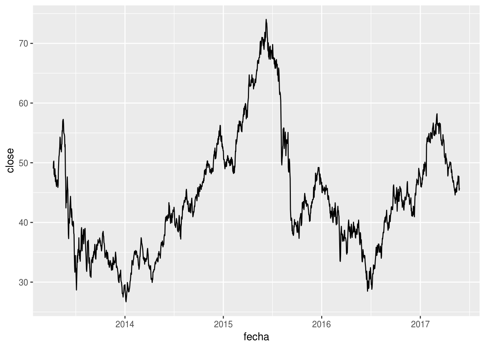
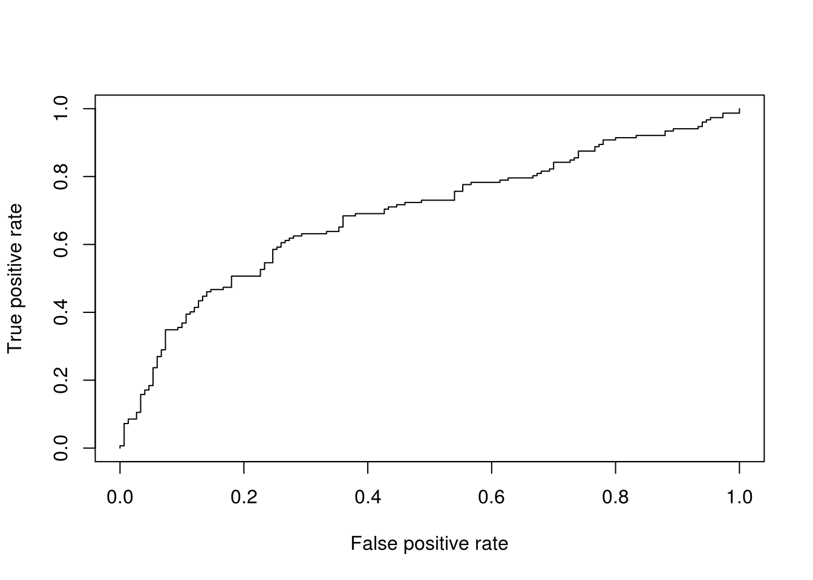
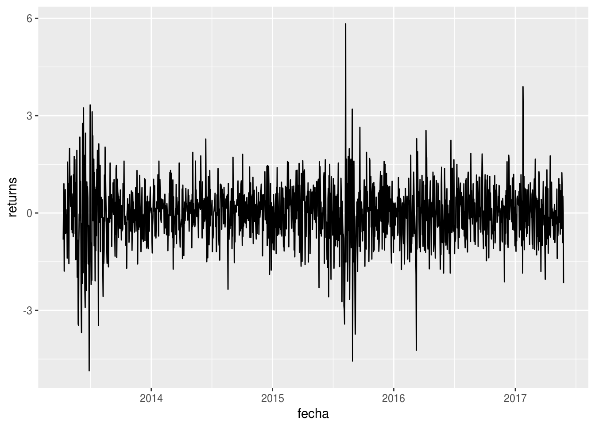

En el archivo de Excel hay información de precios desde el 10 de Abril de 2013 al 26 de Mayo de 2017 de la empresa “XYZ”. Me dí a la tarea de desarrollar un modelo estadístico que pronosticara si el precio de una acción sube o baja en función de su valor histórico y otras variables. Este análisis fue desarrollado en R, Markdown y GitHub y es hecho con propósitos investigativos. El código fuente pueden hallarlo en mi reposotorio (carpeta) en GitHub.
El plan de trabajo de este informe se resume en:
Comenzamos cargando los paquetes a utilizar y los datos del archivo de Excel:
# install.packages(c("caTools", "tseries", "readxl", "data.table", "plotly"))
require(caTools)
require(tseries)
require(readxl)
require(data.table)
require(ggplot2)
require(corrplot)
library(ROCR)
d <- data.table(readxl::read_excel(path = "Datos.xlsx", sheet = 1))
# mostrar las primeras 6 filas de las primeras 7 columnas.
head(d[, .(fecha, open, high, low, close, volume)])## fecha open high low close volume
## 1: 2013-04-10 49.88 50.49 48.90 49.03 9164770
## 2: 2013-04-11 49.06 50.67 48.99 50.15 12524722
## 3: 2013-04-12 49.20 51.24 49.12 50.28 11758412
## 4: 2013-04-13 50.10 50.35 47.75 48.04 15475848
## 5: 2013-04-14 48.31 49.17 48.03 48.10 9085786
## 6: 2013-04-15 48.09 48.47 47.36 47.69 11663580En la hoja campos del archivo de Excel se encuentra la descripción de cada una de las columnas de la variable d.
Graficamos el precio de cierre usando la librería ggplot2:
ggplot(data = d, aes(x = fecha, y = close)) + geom_line()
Antes de proceder a modelar los datos, los vamos a dividir en dos: un bloque de “training” para entrenar el modelo con el 80% de los datos y un bloque de “testing” para calcular el nivel de precisión de nuestro modelo con los datos más recientes.
train <- d[1:floor(nrow(d)*0.8),]
test <- d[(floor(nrow(d)*0.8)+1):nrow(d)]Todas las variables en el archivo de Excel (a excepción de fecha) son numéricas. Mediante un modelo de regresión logística múltiple (Logit), calculamos las variables con mayor incidencia en la explicación de la variable close_trend.
model <- glm(close_trend ~ ., family = binomial(link = 'logit'), data = train[, -1, with = FALSE])## Warning: glm.fit: fitted probabilities numerically 0 or 1 occurredsummary(model)##
## Call:
## glm(formula = close_trend ~ ., family = binomial(link = "logit"),
## data = train[, -1, with = FALSE])
##
## Deviance Residuals:
## Min 1Q Median 3Q Max
## -2.23698 -0.98076 -0.01252 0.95634 2.64228
##
## Coefficients: (2 not defined because of singularities)
## Estimate Std. Error z value Pr(>|z|)
## (Intercept) 4.205e+00 9.659e+00 0.435 0.66331
## open 7.042e-04 2.119e-01 0.003 0.99735
## high 2.435e+00 1.154e+00 2.109 0.03494 *
## low 7.880e-02 2.430e-01 0.324 0.74572
## close 1.533e-02 2.946e-01 0.052 0.95850
## volume -1.017e-08 1.614e-08 -0.630 0.52858
## p_bollinger_lower_band 6.042e-01 2.532e-01 2.387 0.01701 *
## p_bollinger_middle_avg -3.986e-01 2.349e-01 -1.697 0.08970 .
## p_bollinger_upper_band NA NA NA NA
## p_bolinger_bands_v1 -9.678e-02 2.287e-01 -0.423 0.67214
## p_bolinger_bands_v2 -1.436e+01 1.460e+01 -0.984 0.32517
## p_bolinger_bands_v3 -1.193e+01 7.012e+00 -1.701 0.08896 .
## p_bolinger_bands_v4 1.684e+01 1.286e+01 1.310 0.19032
## p_bolinger_bands_v5 3.002e+01 4.324e+01 0.694 0.48743
## p_true_range 9.608e-02 1.389e-01 0.692 0.48911
## p_average_true_range 2.709e+00 1.210e+00 2.240 0.02510 *
## p_true_high -2.926e+00 1.149e+00 -2.547 0.01085 *
## p_true_low NA NA NA NA
## p_average_true_range_v3 -9.781e+01 4.849e+01 -2.017 0.04370 *
## p_zig_zag 1.605e-01 1.377e-01 1.165 0.24397
## p_zig_zag_v1 -3.393e-01 4.240e-01 -0.800 0.42359
## p_zig_zag_v2 -4.175e-03 9.907e-02 -0.042 0.96639
## p_zig_zag_v3 6.426e+00 5.856e+00 1.097 0.27250
## p_detrended_price_oscillator -1.382e+00 2.197e-01 -6.290 3.17e-10 ***
## p_detrended_price_oscillator_v1 -1.267e-01 1.119e-01 -1.133 0.25740
## p_detrended_price_oscillator_v2 4.894e-01 2.801e-01 1.747 0.08059 .
## pv_force_index 1.353e-08 2.534e-08 0.534 0.59333
## pv_force_index_v1 1.398e-01 1.325e-01 1.055 0.29134
## pv_force_index_v2 5.236e-03 9.331e-02 0.056 0.95525
## pv_force_index_v3 5.108e-02 2.426e-01 0.211 0.83326
## pv_force_index_v4 -1.750e-02 1.039e-02 -1.683 0.09231 .
## p_know_sure_thing -1.721e-02 6.362e-03 -2.705 0.00684 **
## know_sure_thing_signal 9.329e-03 5.686e-03 1.641 0.10087
## p_know_sure_thing_v1 -1.022e-01 2.848e-01 -0.359 0.71964
## p_know_sure_thing_v2 -7.553e-01 4.504e-01 -1.677 0.09355 .
## p_know_sure_thing_v3 2.561e-02 2.452e-02 1.044 0.29645
## p_trend_detection_index 1.440e-03 1.415e-03 1.018 0.30882
## p_trend_direction_indicator 1.921e-03 3.843e-03 0.500 0.61726
## p_trend_detection_ind_v1 1.621e-01 1.711e-01 0.948 0.34334
## ---
## Signif. codes: 0 '***' 0.001 '**' 0.01 '*' 0.05 '.' 0.1 ' ' 1
##
## (Dispersion parameter for binomial family taken to be 1)
##
## Null deviance: 1671.9 on 1205 degrees of freedom
## Residual deviance: 1414.8 on 1169 degrees of freedom
## AIC: 1488.8
##
## Number of Fisher Scoring iterations: 8Estadísticamente, las variables que ‘explican’ el comportamiento de close_trend son:
p_bollinger_lower_band: son bandas de volatilidad que se ubican por encima y por debajo de una media móvil.p_average_true_range: es un indicador que mide volatilidad. Según el modelo, por cada unidad que aumenta el logaritmo de esta variable (porque es un modelo Logit), el logaritmo del precio de cierre aumenta en 3.765 unidades.p_average_true_range_v3: radio del p_average_true_range/cierre.p_detrended_price_oscillator: indicador diseñado para remover la tendencia de los precios y hacer más fácil la identificación de ciclos.p_know_sure_thing: indicador que mide el momentum del precio para cuatro diferentes ciclos de precios.Todas estas variables fueron construidas basadas en el precio histórico; lo que compromete la calidad del modelo al violar el supuesto de no-multicolinealidad.
Mientras que no hay un equivalente al R² de los modelos de regresión lineal, el R² de McFadden puede ser usado para calcular el ajuste del modelo.
require(pscl)
pR2(model)["McFadden"]## McFadden
## 0.1537713Es momento de calcular la precisión del modelo utilizando los datos de la variable test definida previamente. En vista que es un modelo Logit, el output son probabilidades por lo que usaremos una cota de 0.5 para determinar si el precio sube o bajo en los próximos días.
fitted.results <- predict(model,newdata=test[, c(-1, -7), with = FALSE],type='response')
fitted.results <- ifelse(fitted.results > 0.5, 1, 0) # Cota de 50%
misClasificError <- mean(fitted.results != test$close_trend)
print(paste0('Precisión: ',round(100*(1-misClasificError), 1), "%"))## [1] "Precisión: 64.9%"Una precisión del 64.9% es relativamente baja. Hay que tomar en consideración que factores como escoger 80% de los datos y no otra cifra influye en el cálculo de los coeficientes y p.e. en la precisión del modelo. A su vez, es útil en este punto utilizar métodos de cross validación como k-fold u otros disponibles para iterar con las combinaciones de variables y parámetros que resulten en un mejor modelo.
Como último paso, calcularemos la curva ROC y el área bajo la curva (AUC) las cuales son medidas típicas de desempeño para clasificadores binarios.
El ROC es una curva creada para graficar la tasa de verdaderos positivos contra los falsos positivos en varias configuraciones, mientras que el AUC es el área bajo la curva de ROC. Como estándar en la academia, un modelo con buena habilidad predictiva debería estar cercano a 1 y lejos de 0.5 en el coeficiente de AUC.
p <- predict(model,newdata=test[, c(-1, -7), with = FALSE],type='response')
pr <- prediction(p, test$close_trend)
prf <- performance(pr, measure = "tpr", x.measure = "fpr")
plot(prf)
auc <- performance(pr, measure = "auc")
auc <- auc@y.values[[1]]
auc## [1] 0.6908333d$returns <- c(NA, diff(d$open, lag = 1))
print(adf.test(d$close))##
## Augmented Dickey-Fuller Test
##
## data: d$close
## Dickey-Fuller = -1.9219, Lag order = 11, p-value = 0.6114
## alternative hypothesis: stationary# Por resultado del Augmented Dickey-Fuller Test la serie no es estacional. A stationary time series means a time series without trend, one having a constant mean and variance over time, which makes it easy for predicting values.
logical <- !is.na(d$returns)
print(adf.test(d[logical, returns]))##
## Augmented Dickey-Fuller Test
##
## data: d[logical, returns]
## Dickey-Fuller = -10.811, Lag order = 11, p-value = 0.01
## alternative hypothesis: stationaryqplot(y = returns, x = fecha, geom = "line", data = d[logical])
# Ya es estacional por el p-valor inferior a cero.
rm(logical)
set.seed(101)
sample = sample.split(d$returns, SplitRatio = .80)
train = subset(d$returns, sample == TRUE)
test = subset(d$returns, sample == FALSE)Fuente de información: https://www.r-bloggers.com/forecasting-stock-returns-using-arima-model/
Código fuente: https://github.com/daumann/r-stockPrediction/blob/master/findBestPrediction.r
En el ejemplo de este código, de los 25 modelos intentados, el óptimo fue uno de Redes Neuronales Artificiales.
En la teoría, las variables del modelo de Regresión Logística ‘explicaron’ parte del comportamiento del precio de la acción. En la práctica, los precios de las acciones responden a las expectativas que tiene el mercado en función de nueva información (como noticias) y por ende, ninguna de las demás variables en la base de datos entran en esta categoría: dependen de información pasada. Hay que tener prudencia cuando se tomen decisiones de inversión teniendo en cuenta únicamente estas variables.
Por otro lado, la estructuración de modelos de series de tiempo aglutinan toda información pasada y están diseñados para considerar tendencias, eventos pasados y lags entre eventos. Es por esta razón que un modelo autorregresivo (AR) integrado (I) de media móvil (MA) desempeña un mejor papel teórico en la modelación del precio de las acciones. Aún así, hay que considerar variables como noticias y tendencias en redes sociales para tener un mirada holística de lo que sucede con la acción.
Finalmente, la precisión de un modelo está atada a su desempeño frente al “test” dataset y de sus métricas respecto a otros modelos. De ahí la importancia de cross validar con varias opciones.